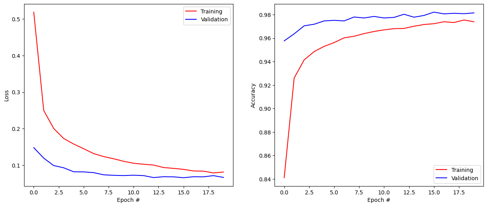

import numpy as np
import matplotlib.pyplot as pltKeras tutorial
The goal of this tutorial is to very quickly present keras, the high-level API of tensorflow, as it has already been seen in the Neurocomputing exercises. We will train a small fully-connected network on MNIST and observe what happens when the inputs or outputs are correlated, by training successively on the 0 digits, then the 1, etc.
Keras
The first step is to install tensorflow. The easiest way is to use pip:
pip install tensorflowkeras is now available as a submodule of tensorflow (you can also install it as a separate package):
import tensorflow as tfKeras provides a lot of ready-made layer types, activation functions, optimizers and so on. Do not hesitate to read its documentation on https://keras.io.
import tensorflow as tfThe most important object in keras is Sequential. It is a container where you sequentially add layers of neurons (fully-connected, convolutional, recurrent, etc) and other stuff. It represents your model, i.e. the neural network itself.
model = tf.keras.models.Sequential()You can then add() layers to the model. A fully-connected layer is called Dense in keras.
Let’s create a MLP with 10 input neurons, two hidden layers with 100 hidden neurons each and 3 output neurons.
The input layer is represented by the Input layer:
model.add(tf.keras.layers.Input((10,)))The first hidden layer can be added to the model with:
model.add(tf.keras.layers.Dense(100, activation="relu"))The layer has 100 neurons and uses the ReLU activation function. One could optionally define the activation function as an additional “layer”, but it is usually not needed:
model.add(tf.keras.layers.Dense(100))
model.add(tf.keras.layers.Activation('relu'))Adding more layers is straightforward:
model.add(tf.keras.layers.Dense(100, activation="relu"))Finally, we can add the output layer. The activation function depends on the problem:
- For regression problems, a linear activation function should be used when the targets can take any value (e.g. Q-values):
model.add(tf.keras.layers.Dense(3, activation="linear"))If the targets are bounded between 0 and 1, a logistic/sigmoid function can be used:
model.add(tf.keras.layers.Dense(3, activation="sigmoid"))- For multi-class classification problems, a softmax activation function should be used:
model.add(tf.keras.layers.Dense(3, activation="softmax"))This defines fully the structure of your desired neural network.
Q: Implement a neural network for classification with 10 input neurons, two hidden layers with 100 neurons each (using ReLU) and 3 output neurons.
Hint: print(model.summary()) gives you a summary of the architecture of your model. Note in particular the number of trainable parameters (weights and biases).
model = tf.keras.models.Sequential()
model.add(tf.keras.layers.Input((10,)))
model.add(tf.keras.layers.Dense(100, activation="relu"))
model.add(tf.keras.layers.Dense(100, activation='relu'))
model.add(tf.keras.layers.Dense(3, activation='softmax'))
print(model.summary())Model: "sequential_3"
_________________________________________________________________
Layer (type) Output Shape Param #
=================================================================
dense_9 (Dense) (None, 100) 1100
dense_10 (Dense) (None, 100) 10100
dense_11 (Dense) (None, 3) 303
=================================================================
Total params: 11,503
Trainable params: 11,503
Non-trainable params: 0
_________________________________________________________________
NoneThe next step is to choose an optimizer for the neural network, i.e. a variant of gradient descent that will be used to iteratively modify the parameters.
keras provides an extensive list of optimizers: https://keras.io/optimizers/. The most useful in practice are:
SGD, the vanilla stochastic gradient descent.
optimizer = tf.keras.optimizers.SGD(learning_rate=0.001, momentum=0.9, nesterov=True)RMSprop, using second moments:
optimizer = tf.keras.optimizers.RMSprop(learning_rate=0.001)Adam:
optimizer = tf.keras.optimizers.Adam(learning_rate=0.001)Choosing a optimizer is a matter of taste and trial-and-error. In deep RL, a good choice is Adam: the default values for its other parameters are usually good, it converges well, so your only job is to find the right learning rate.
Finally, the model must be compiled by defining:
A loss function. For multi-class classification, it should be
'categorical_crossentropy'. For regression, it can be'mse'. See the list of built-in loss functions here: https://keras.io/losses/ but know that you can also simply define your own.The chosen optimizer.
The metrics, i.e. what you want tensorflow to print during training. By default it only prints the current value of the loss function. For classification tasks, it usually makes more sense to also print the
accuracy.
model.compile(
loss='categorical_crossentropy',
optimizer=optimizer,
metrics=['accuracy']
)Q: Compile the model for classification, using the Adam optimizer and a learning rate of 0.01.
optimizer = tf.keras.optimizers.Adam(learning_rate=0.01)
model.compile(
loss='categorical_crossentropy',
optimizer=optimizer,
metrics=['accuracy']
)Let’s now train the model on some dummy data. To show the power of deep neural networks, we will try to learn noise by heart.
The following cell creates an input tensor X with 1000 random vectors of 10 elements, with values sampled between -1 and 1. The targets (desired outputs) t are class indices (0, 1 or 2), also randomly selected.
However, neural networks expect one-hot encoded vectors for the target, i.e. (1, 0, 0), (0, 1, 0), (0, 0, 1) instead of 0, 1, 2. The method tf.keras.utils.to_categorical allows you to do that.
X = np.random.uniform(-1.0, 1.0, (1000, 10))
t = np.random.randint(0, 3, (1000, ))
T = tf.keras.utils.to_categorical(t, 3)Let’s learn it. The Sequential model has a method called fit() where you simply pass the training data (X, T) and some other parameters, such as:
- the batch size,
- the total number of epochs,
- the proportion of training examples to keep in order to compute the validation loss/accuracy (optional but recommmended).
# Training
history = tf.keras.callbacks.History()
model.fit(
X, T,
batch_size=100,
epochs=50,
validation_split=0.1,
callbacks=[history]
)Q: Train the model on the data, using a batch size of 100 for 50 epochs. Explain why you obtained this result.
history = model.fit(
X, T,
batch_size=100,
epochs=50,
validation_split=0.1,
verbose=2
)Epoch 1/502022-11-15 13:09:40.852114: I tensorflow/core/grappler/optimizers/custom_graph_optimizer_registry.cc:114] Plugin optimizer for device_type GPU is enabled.9/9 - 0s - loss: 1.1150 - accuracy: 0.3489 - val_loss: 1.1119 - val_accuracy: 0.3500 - 395ms/epoch - 44ms/step
Epoch 2/50
9/9 - 0s - loss: 1.0725 - accuracy: 0.4256 - val_loss: 1.0961 - val_accuracy: 0.3900 - 88ms/epoch - 10ms/step
Epoch 3/502022-11-15 13:09:41.054430: I tensorflow/core/grappler/optimizers/custom_graph_optimizer_registry.cc:114] Plugin optimizer for device_type GPU is enabled.9/9 - 0s - loss: 1.0460 - accuracy: 0.4667 - val_loss: 1.1063 - val_accuracy: 0.4000 - 93ms/epoch - 10ms/step
Epoch 4/50
9/9 - 0s - loss: 1.0227 - accuracy: 0.4778 - val_loss: 1.1037 - val_accuracy: 0.4000 - 82ms/epoch - 9ms/step
Epoch 5/50
9/9 - 0s - loss: 1.0023 - accuracy: 0.4911 - val_loss: 1.1187 - val_accuracy: 0.4000 - 83ms/epoch - 9ms/step
Epoch 6/50
9/9 - 0s - loss: 0.9796 - accuracy: 0.5222 - val_loss: 1.1354 - val_accuracy: 0.4100 - 83ms/epoch - 9ms/step
Epoch 7/50
9/9 - 0s - loss: 0.9424 - accuracy: 0.5444 - val_loss: 1.1634 - val_accuracy: 0.3800 - 85ms/epoch - 9ms/step
Epoch 8/50
9/9 - 0s - loss: 0.9101 - accuracy: 0.5856 - val_loss: 1.1859 - val_accuracy: 0.3800 - 84ms/epoch - 9ms/step
Epoch 9/50
9/9 - 0s - loss: 0.8892 - accuracy: 0.5933 - val_loss: 1.2218 - val_accuracy: 0.3700 - 82ms/epoch - 9ms/step
Epoch 10/50
9/9 - 0s - loss: 0.8288 - accuracy: 0.6411 - val_loss: 1.2725 - val_accuracy: 0.3800 - 80ms/epoch - 9ms/step
Epoch 11/50
9/9 - 0s - loss: 0.7997 - accuracy: 0.6500 - val_loss: 1.3129 - val_accuracy: 0.3900 - 81ms/epoch - 9ms/step
Epoch 12/50
9/9 - 0s - loss: 0.7529 - accuracy: 0.6922 - val_loss: 1.3128 - val_accuracy: 0.3500 - 82ms/epoch - 9ms/step
Epoch 13/50
9/9 - 0s - loss: 0.6836 - accuracy: 0.7289 - val_loss: 1.3802 - val_accuracy: 0.4000 - 82ms/epoch - 9ms/step
Epoch 14/50
9/9 - 0s - loss: 0.6284 - accuracy: 0.7467 - val_loss: 1.4751 - val_accuracy: 0.3600 - 82ms/epoch - 9ms/step
Epoch 15/50
9/9 - 0s - loss: 0.5829 - accuracy: 0.7867 - val_loss: 1.4785 - val_accuracy: 0.3800 - 83ms/epoch - 9ms/step
Epoch 16/50
9/9 - 0s - loss: 0.5330 - accuracy: 0.7967 - val_loss: 1.7002 - val_accuracy: 0.3700 - 81ms/epoch - 9ms/step
Epoch 17/50
9/9 - 0s - loss: 0.4989 - accuracy: 0.8278 - val_loss: 1.6326 - val_accuracy: 0.4000 - 81ms/epoch - 9ms/step
Epoch 18/50
9/9 - 0s - loss: 0.4842 - accuracy: 0.8189 - val_loss: 1.9201 - val_accuracy: 0.3500 - 83ms/epoch - 9ms/step
Epoch 19/50
9/9 - 0s - loss: 0.4380 - accuracy: 0.8356 - val_loss: 1.7465 - val_accuracy: 0.3900 - 81ms/epoch - 9ms/step
Epoch 20/50
9/9 - 0s - loss: 0.3821 - accuracy: 0.8744 - val_loss: 1.9561 - val_accuracy: 0.3500 - 85ms/epoch - 9ms/step
Epoch 21/50
9/9 - 0s - loss: 0.3353 - accuracy: 0.8911 - val_loss: 2.0040 - val_accuracy: 0.2600 - 90ms/epoch - 10ms/step
Epoch 22/50
9/9 - 0s - loss: 0.2960 - accuracy: 0.9100 - val_loss: 2.1072 - val_accuracy: 0.3400 - 82ms/epoch - 9ms/step
Epoch 23/50
9/9 - 0s - loss: 0.2388 - accuracy: 0.9456 - val_loss: 2.1638 - val_accuracy: 0.3500 - 83ms/epoch - 9ms/step
Epoch 24/50
9/9 - 0s - loss: 0.2336 - accuracy: 0.9322 - val_loss: 2.2757 - val_accuracy: 0.2900 - 83ms/epoch - 9ms/step
Epoch 25/50
9/9 - 0s - loss: 0.1806 - accuracy: 0.9633 - val_loss: 2.4390 - val_accuracy: 0.3400 - 82ms/epoch - 9ms/step
Epoch 26/50
9/9 - 0s - loss: 0.1815 - accuracy: 0.9544 - val_loss: 2.4587 - val_accuracy: 0.3400 - 81ms/epoch - 9ms/step
Epoch 27/50
9/9 - 0s - loss: 0.1586 - accuracy: 0.9656 - val_loss: 2.5464 - val_accuracy: 0.3000 - 84ms/epoch - 9ms/step
Epoch 28/50
9/9 - 0s - loss: 0.1457 - accuracy: 0.9722 - val_loss: 2.6396 - val_accuracy: 0.3300 - 83ms/epoch - 9ms/step
Epoch 29/50
9/9 - 0s - loss: 0.1386 - accuracy: 0.9789 - val_loss: 2.5508 - val_accuracy: 0.3300 - 82ms/epoch - 9ms/step
Epoch 30/50
9/9 - 0s - loss: 0.1091 - accuracy: 0.9833 - val_loss: 2.8272 - val_accuracy: 0.3400 - 87ms/epoch - 10ms/step
Epoch 31/50
9/9 - 0s - loss: 0.0816 - accuracy: 0.9944 - val_loss: 2.8505 - val_accuracy: 0.3500 - 90ms/epoch - 10ms/step
Epoch 32/50
9/9 - 0s - loss: 0.0709 - accuracy: 0.9967 - val_loss: 2.8556 - val_accuracy: 0.3400 - 92ms/epoch - 10ms/step
Epoch 33/50
9/9 - 0s - loss: 0.0604 - accuracy: 0.9978 - val_loss: 2.9199 - val_accuracy: 0.3400 - 89ms/epoch - 10ms/step
Epoch 34/50
9/9 - 0s - loss: 0.0495 - accuracy: 0.9989 - val_loss: 2.9985 - val_accuracy: 0.3300 - 90ms/epoch - 10ms/step
Epoch 35/50
9/9 - 0s - loss: 0.0407 - accuracy: 1.0000 - val_loss: 3.2302 - val_accuracy: 0.3200 - 88ms/epoch - 10ms/step
Epoch 36/50
9/9 - 0s - loss: 0.0325 - accuracy: 1.0000 - val_loss: 3.1978 - val_accuracy: 0.3300 - 89ms/epoch - 10ms/step
Epoch 37/50
9/9 - 0s - loss: 0.0313 - accuracy: 0.9989 - val_loss: 3.1832 - val_accuracy: 0.3500 - 99ms/epoch - 11ms/step
Epoch 38/50
9/9 - 0s - loss: 0.0322 - accuracy: 0.9978 - val_loss: 3.3745 - val_accuracy: 0.3200 - 87ms/epoch - 10ms/step
Epoch 39/50
9/9 - 0s - loss: 0.0271 - accuracy: 1.0000 - val_loss: 3.4600 - val_accuracy: 0.3100 - 85ms/epoch - 9ms/step
Epoch 40/50
9/9 - 0s - loss: 0.0230 - accuracy: 1.0000 - val_loss: 3.4435 - val_accuracy: 0.3200 - 88ms/epoch - 10ms/step
Epoch 41/50
9/9 - 0s - loss: 0.0179 - accuracy: 1.0000 - val_loss: 3.5294 - val_accuracy: 0.3400 - 88ms/epoch - 10ms/step
Epoch 42/50
9/9 - 0s - loss: 0.0156 - accuracy: 1.0000 - val_loss: 3.5217 - val_accuracy: 0.3200 - 85ms/epoch - 9ms/step
Epoch 43/50
9/9 - 0s - loss: 0.0139 - accuracy: 1.0000 - val_loss: 3.5561 - val_accuracy: 0.3300 - 88ms/epoch - 10ms/step
Epoch 44/50
9/9 - 0s - loss: 0.0126 - accuracy: 1.0000 - val_loss: 3.5808 - val_accuracy: 0.3300 - 89ms/epoch - 10ms/step
Epoch 45/50
9/9 - 0s - loss: 0.0119 - accuracy: 1.0000 - val_loss: 3.6306 - val_accuracy: 0.3200 - 87ms/epoch - 10ms/step
Epoch 46/50
9/9 - 0s - loss: 0.0108 - accuracy: 1.0000 - val_loss: 3.6863 - val_accuracy: 0.3200 - 87ms/epoch - 10ms/step
Epoch 47/50
9/9 - 0s - loss: 0.0100 - accuracy: 1.0000 - val_loss: 3.6891 - val_accuracy: 0.3200 - 87ms/epoch - 10ms/step
Epoch 48/50
9/9 - 0s - loss: 0.0094 - accuracy: 1.0000 - val_loss: 3.7300 - val_accuracy: 0.3200 - 85ms/epoch - 9ms/step
Epoch 49/50
9/9 - 0s - loss: 0.0089 - accuracy: 1.0000 - val_loss: 3.7520 - val_accuracy: 0.3200 - 84ms/epoch - 9ms/step
Epoch 50/50
9/9 - 0s - loss: 0.0084 - accuracy: 1.0000 - val_loss: 3.8023 - val_accuracy: 0.3200 - 86ms/epoch - 10ms/stepA: The final training is 100%, the validation accuracy is 33% (may vary depending on initialization). The network has learned the training examples by heart, although they are totally random, but totally fails to generalize.
The main is reason is that we have only 1000 training examples, with a total number of free parameters (VC dimension) around 11500. By definition, the model can learn this training set perfectly, although it is totally random. Its VC dimension is however way to high to generalize anything. It is even worse here: as the data is random, there is nothing to generalize. A nice example to understand why NN overfit…
Training a MLP on MNIST
Let’s now try to learn something a bit more serious, the MNIST dataset. The following cell load the MNIST data (training set 60000 28x28 monochrome images, test set of 10000 images), normalizes it (values betwen 0 and 1 for each pixel), removes the mean image from the training set and transforms the targets to one-hot encoded vectors for the 10 classes. See the neurocomputing exercise for more details.
# Load the MNIST dataset
(X_train, t_train), (X_test, t_test) = tf.keras.datasets.mnist.load_data()
print("Training data:", X_train.shape, t_train.shape)
print("Test data:", X_test.shape, t_test.shape)
# Reshape the images to vectors and normalize
X_train = X_train.reshape(X_train.shape[0], 784).astype('float32') / 255.
X_test = X_test.reshape(X_test.shape[0], 784).astype('float32') / 255.
# Mean removal
X_mean = np.mean(X_train, axis=0)
X_train -= X_mean
X_test -= X_mean
# One-hot encoded outputs
T_train = tf.keras.utils.to_categorical(t_train, 10)
T_test = tf.keras.utils.to_categorical(t_test, 10)Training data: (60000, 28, 28) (60000,)
Test data: (10000, 28, 28) (10000,)Q: Create a fully connected neural network with 784 input neurons (one per pixel), 10 softmax output neurons and whatever you want in the middle, so that it can reach around 98% validation accuracy after 20 epochs.
- Put the network creation (including
compile()) in a methodcreate_model(), so that you can create a model multiple times. - Choose a good value for the learning rate.
- Do not exagerate with the number of layers and neurons. Two or there hidden layers with 100 to 300 neurons are more than enough.
- You will quickly observe that the network overfits: the training accuracy is higher than the validation accuracy. The training accuracy actually goes to 100% if your network is too big. In that case, feel free to add a dropout layer after each fully-connected layer:
model.add(tf.keras.layers.Dropout(0.5))def create_model():
# Create the model
model = tf.keras.models.Sequential()
# Input layer with 784 pixels
model.add(tf.keras.layers.Input((784,)))
# Hidden layer with 150 neurons
model.add(tf.keras.layers.Dense(150, activation="relu"))
model.add(tf.keras.layers.Dropout(0.5))
# Second hidden layer with 100 neurons
model.add(tf.keras.layers.Dense(100, activation="relu"))
model.add(tf.keras.layers.Dropout(0.5))
# Softmax output layer with 10 neurons
model.add(tf.keras.layers.Dense(10, activation="softmax"))
# Learning rule
optimizer = tf.keras.optimizers.Adam(learning_rate=0.001)
# Loss function
model.compile(
loss='categorical_crossentropy', # loss
optimizer=optimizer, # learning rule
metrics=['accuracy'] # show accuracy
)
print(model.summary())
return modelmodel = create_model()
# Training
history = tf.keras.callbacks.History()
model.fit(
X_train, T_train,
batch_size=100,
epochs=20,
validation_split=0.1,
callbacks=[history]
)Model: "sequential_1"
_________________________________________________________________
Layer (type) Output Shape Param #
=================================================================
dense_3 (Dense) (None, 150) 117750
dropout (Dropout) (None, 150) 0
dense_4 (Dense) (None, 100) 15100
dropout_1 (Dropout) (None, 100) 0
dense_5 (Dense) (None, 10) 1010
=================================================================
Total params: 133,860
Trainable params: 133,860
Non-trainable params: 0
_________________________________________________________________
None
Epoch 1/20/Users/vitay/Applications/miniforge3/lib/python3.9/site-packages/keras/optimizers/optimizer_v2/adam.py:114: UserWarning: The `lr` argument is deprecated, use `learning_rate` instead.
super().__init__(name, **kwargs) 1/540 [..............................] - ETA: 3:03 - loss: 2.6045 - accuracy: 0.05002022-11-15 13:05:05.914474: I tensorflow/core/grappler/optimizers/custom_graph_optimizer_registry.cc:114] Plugin optimizer for device_type GPU is enabled.539/540 [============================>.] - ETA: 0s - loss: 0.5274 - accuracy: 0.83602022-11-15 13:05:10.488618: I tensorflow/core/grappler/optimizers/custom_graph_optimizer_registry.cc:114] Plugin optimizer for device_type GPU is enabled.540/540 [==============================] - 5s 9ms/step - loss: 0.5271 - accuracy: 0.8361 - val_loss: 0.1576 - val_accuracy: 0.9532
Epoch 2/20
540/540 [==============================] - 5s 9ms/step - loss: 0.2489 - accuracy: 0.9263 - val_loss: 0.1201 - val_accuracy: 0.9650
Epoch 3/20
540/540 [==============================] - 5s 9ms/step - loss: 0.2015 - accuracy: 0.9406 - val_loss: 0.1029 - val_accuracy: 0.9680
Epoch 4/20
540/540 [==============================] - 5s 9ms/step - loss: 0.1756 - accuracy: 0.9461 - val_loss: 0.0901 - val_accuracy: 0.9732
Epoch 5/20
540/540 [==============================] - 5s 9ms/step - loss: 0.1529 - accuracy: 0.9546 - val_loss: 0.0822 - val_accuracy: 0.9772
Epoch 6/20
540/540 [==============================] - 5s 9ms/step - loss: 0.1419 - accuracy: 0.9568 - val_loss: 0.0832 - val_accuracy: 0.9758
Epoch 7/20
540/540 [==============================] - 5s 9ms/step - loss: 0.1312 - accuracy: 0.9599 - val_loss: 0.0786 - val_accuracy: 0.9765
Epoch 8/20
540/540 [==============================] - 5s 9ms/step - loss: 0.1219 - accuracy: 0.9629 - val_loss: 0.0735 - val_accuracy: 0.9772
Epoch 9/20
540/540 [==============================] - 5s 9ms/step - loss: 0.1145 - accuracy: 0.9643 - val_loss: 0.0768 - val_accuracy: 0.9767
Epoch 10/20
540/540 [==============================] - 5s 9ms/step - loss: 0.1094 - accuracy: 0.9659 - val_loss: 0.0681 - val_accuracy: 0.9803
Epoch 11/20
540/540 [==============================] - 5s 9ms/step - loss: 0.1031 - accuracy: 0.9670 - val_loss: 0.0698 - val_accuracy: 0.9793
Epoch 12/20
540/540 [==============================] - 5s 9ms/step - loss: 0.1032 - accuracy: 0.9685 - val_loss: 0.0679 - val_accuracy: 0.9793
Epoch 13/20
540/540 [==============================] - 5s 9ms/step - loss: 0.0983 - accuracy: 0.9682 - val_loss: 0.0683 - val_accuracy: 0.9788
Epoch 14/20
540/540 [==============================] - 5s 9ms/step - loss: 0.0911 - accuracy: 0.9710 - val_loss: 0.0687 - val_accuracy: 0.9790
Epoch 15/20
540/540 [==============================] - 5s 9ms/step - loss: 0.0918 - accuracy: 0.9714 - val_loss: 0.0641 - val_accuracy: 0.9818
Epoch 16/20
540/540 [==============================] - 5s 9ms/step - loss: 0.0881 - accuracy: 0.9727 - val_loss: 0.0645 - val_accuracy: 0.9800
Epoch 17/20
540/540 [==============================] - 5s 9ms/step - loss: 0.0841 - accuracy: 0.9734 - val_loss: 0.0652 - val_accuracy: 0.9805
Epoch 18/20
540/540 [==============================] - 5s 9ms/step - loss: 0.0826 - accuracy: 0.9738 - val_loss: 0.0644 - val_accuracy: 0.9798
Epoch 19/20
540/540 [==============================] - 5s 9ms/step - loss: 0.0803 - accuracy: 0.9742 - val_loss: 0.0671 - val_accuracy: 0.9792
Epoch 20/20
540/540 [==============================] - 5s 9ms/step - loss: 0.0826 - accuracy: 0.9742 - val_loss: 0.0603 - val_accuracy: 0.9810<keras.callbacks.History at 0x1598b4f40>After training, one should evaluate the model on the test set. keras provides an evaluate() method that computes the different metrics (in our case the loss) on the data:
score = model.evaluate(X_test, T_test)Another solution would be to predict() labels on the test set and manually compare them to the ground truth:
Y = model.predict(X_test)
loss = - np.mean(T_test * np.log(Y))
predicted_classes = np.argmax(Y, axis=1)
accuracy = 1.0 - np.sum(predicted_classes != t_test)/t_test.shape[0]Another important thing to visualize after training is how the training and validation loss (or accuracy) evolved during training. The fit() method updates a History object which contains the history of your metrics (loss and accuracy) after each epoch of training. These are simple numpy arrays, accessible with:
history.history['loss']
history.history['val_loss']
history.history['accuracy']
history.history['val_accuracy']Q: Compute the test loss and accuracy of your model. Plot the history of the training and validation loss/accuracy.
# Testing
score = model.evaluate(X_test, T_test)
print('Test loss:', score[0])
print('Test accuracy:', score[1])
plt.figure(figsize=(15, 6))
plt.subplot(121)
plt.plot(history.history['loss'], '-r', label="Training")
plt.plot(history.history['val_loss'], '-b', label="Validation")
plt.xlabel('Epoch #')
plt.ylabel('Loss')
plt.legend()
plt.subplot(122)
plt.plot(history.history['accuracy'], '-r', label="Training")
plt.plot(history.history['val_accuracy'], '-b', label="Validation")
plt.xlabel('Epoch #')
plt.ylabel('Accuracy')
plt.legend()
plt.show() 15/313 [>.............................] - ETA: 2s - loss: 0.0563 - accuracy: 0.98332022-11-15 13:06:45.877919: I tensorflow/core/grappler/optimizers/custom_graph_optimizer_registry.cc:114] Plugin optimizer for device_type GPU is enabled.313/313 [==============================] - 2s 7ms/step - loss: 0.0717 - accuracy: 0.9789
Test loss: 0.07174411416053772
Test accuracy: 0.9789000749588013